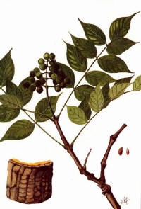

Tên khác:
Tên thường gọi: Hoàng bá, Nghiệt Bì (Thương Hàn Luận), Nghiệt Mộc (Bản Kinh), Hoàng Nghiệt (Bản Thảo Kinh Tập Chú), Sơn Đồ (Hòa Hán Dược Khảo).
Tên khoa học: Phellodendron chinensis Schneid.
Họ khoa học: Thuộc họ Cam (Rutaceae).
Cây hoàng bá
( Mô tả, hình ảnh cây hoàng bá, thu hái, chế biến, thành phần hoá học, tác dụng dược lý ....)
Mô tả
 Hoàng bá là cây thuốc quý. Dạng cây gỗ cao 15m hay hơn, phân cành nhiều. Vỏ
thân dày có màu vàng ở mặt trong, vị đắng. Lá kép lông chim lẻ, gồm 5 - 13 lá
chét. Hoa đơn tính, màu vàng lục, mọc thành chùy ở đầu cành. Quả hình cầu, khi
chín màu tím đen, có 2 - 5 hạt.
Hoàng bá là cây thuốc quý. Dạng cây gỗ cao 15m hay hơn, phân cành nhiều. Vỏ
thân dày có màu vàng ở mặt trong, vị đắng. Lá kép lông chim lẻ, gồm 5 - 13 lá
chét. Hoa đơn tính, màu vàng lục, mọc thành chùy ở đầu cành. Quả hình cầu, khi
chín màu tím đen, có 2 - 5 hạt.
Phần dùng làm thuốc: Vỏ cây khô (Cortex Phellodendri). Lựa loại vỏ dầy, mầu vàng tươi, sạch lớp bẩn ở ngoài là tốt.
Mô tả dược liệu: vị thuốc hoàng bá
.jpg)
Mảnh thuốc hơi cong, cạnh không đều, dài rộng không nhất định, dầy 0,4-0,8cm. Mặt ngoài mầu vàng thẫm, vàng nâu hoặc nâu vàng nhạt, có những cạnh và rãnh dọc, những chấm nhỏ mầu nâu. Bên trong mầu vàng hoặc vàng xám.ấtttt nhẹ, dễ bẻ gấy, mảnh bẻ gẫy chia thành từng lớp, có sợi mầu vàng tươi. Hơi có mùi, vị rất đắng, nhấm thấy có chất dính và trơn (Dược Tài Học). Đây là vị thuốc quý.
Bào chế:

+ Hoàng bá tính hàn mà chìm, dùng sống thì tả thực hỏa, dùng chín khỏi hại tới dạ dày, chế với rượu trị bệnh ở thượng tiêu, chế với nước trị bệnh ở hạ tiêu, chế với mật trị bệnh ở giữa (Bản Thảo Cương Mục).
+ Rửa sạch, vớt ra, ủ mềm, xắt thành sợi, phơi khô (Dược Tài Học).
+ Cạo gọt bỏ lớp vỏ thô, thái phiến, dùng sống hoặc chế với rượu, hoặc chế Gừng, hoặc sao đen thành than, hoặc tán nhỏ (Đông Dược Học Thiết Yếu).
+ Diêm Hoàng Bá: Xắt thành sợi xong, tẩm nước muối cho ướt đều[50kg Hoàng bá, dùng 1,4kg Muối, pha nước vừa đủ], dùng lửa nhỏ sao gìa, lấy ra, phơi khô (Dược Tài Học).
+ Tửu Hoàng bá: Hoàng bá xắt thành sợi xong tẩm với rượu (100âkg Hoàng bá, 10kg Rượu), trộn đều, dùng lửa nhỏ sao qua, lấy ra, phơi khô (Dược Tài Học).

+ Hoàng Bá Thán: Hoàng bá xắt thành sợi xong, cho vào sao to lửa thành mầu đen xám nhưng còn tồn tính, phun nước cho ướt rồi bẻ ra, phơi khô (Dược Tài Học).

Bảo
quản:
Để nơi khô ráo, đậy kín. Tránh ẩm thấp, phòng sâu mọc và biến màu.
Thành phần hóa học:

+ Berberine, Jatorrhizine, Magnoflorine, Phellodendrine, Candicine, Palmatine, Menisperine, Obacunone, Obaculactone, Dictamnoide, Obacunóic acid, Lumicaeruleic acid, 7-Dehydrostigmasterol, b-Sistosterol, Campesterol (Trung Dược Học).
+ Berberine, Phellodendrine, Magnoflorine, Jatrorrhizine, Palmatine, Cancidine (Quốc Hữu Thuận – Dược Học Tạp Chí (Nhật Bản) 1962, 82: 611; 1961, 81: 1370).
+ Hyspiol B (Bhandarin P và cộng sự – Agust J Chem, 1988, 41 (11): 1977).
+ Phellamurinm 10%, Amurensin 1% (Hesagawa M và cộng sự Chem Soc 1953, 75: 5507).
+ Dihydrophelloside, Phelloside (Shevchuk O I và cộng sự Khim Prir Pharmacol 1969, 21 (2): 181).
+ Herculin (Bhandari P và cộng sự, Aust J Chem 1988, 41 (11): 1777).
Tác dụng dược lý:

+ Tác dụng kháng khuẩn: Cao cồn vỏ cây hoàng bá cótác dụng kháng khuẩn đốivới nhiều vi khuẩn gram dương và gram âm, trong đó có trực khuẩn lao. Hợp chất lacton trong hoàng bá có tác dụng ức chế hệ thần kinh trung ương và gây hạ đường huyết ở thỏ bình thường. Ở thỏ đã cắt bỏ tuyến tụy, không thể hiện tác dụng này.
Berberin có tác dụng tăng tiết mật vầ có ích trong điều trị giai đoạn mạn tính của các bệnh viêm túi mật với rối loạn vận động đường dẫn mật, viêm túi mật do sỏi mật, viêm gan - túi mật, có biến chứng của viêm ống mật. Nó ít tác dụng trong viêm túi mật cấp tính (Trung Dược Học).
+ Dịch chiết toàn phần của Hoàng bá làm vỡ đơn bào Entamoeba histolytica, còn Berberin làm đơn bào co thần kinh (Trung Dược Học).
+ Nước sắc hoàng bá có tác dụng chống Entameoba histolytica trong ống nghiệm ở nồng độ l: 16 và Berberin có tác dụng rõ rệt ở nồng độ l: 200. Alcaloid toàn phần của Hoàng bá chứa Berberin với hàm lượng lớn nhất, ức chế trong ống nghiệm các vi khuẩn và nấm Bacillus mycoides, Bacillus subtilis, Candida albicans,Salmeonella typhi, Shigella shigae, Sh. flexneri, phế cầu, trực khuẩn lao, tụ cầu vàng,. liên cầu khuẩn (Trung Dược Học).
+ Hoàng bá có tác dụng lợi tiểu và ức chế hoạt tính gây co thắt co trơn của histamin và Acetylcholin. Hoàng bá đã được kết hợpvới các thuốc hóa dược trong điều trị viêm ruột kết mạn tính đạt kết quả tốt. Một bài thuốc trong có hoàng bá dã được điều trị tiêu chảy trẻ em đạt tỷ lệ khỏi và đỡ 95%. Viên Berberin đã được áp dụng điều trị lỵ trực khuẩn trên 80 bệnh nhân (30 nhiễm Shigella flexneri, 15 nhiễm Sh. Shigae và 8 nhiễm các Shigella khác) . Tỷ lệ khỏi đạt 93% (Trung Dược Học).
+ Hoàng bá còn được áp dụng trong công thức kết hợp để điều trị viêm loét cổ tử cung và lộ tuyến trên 360 bệnh nhân đạt tỉ lệ khỏi và đỡ 96%. Thuốc có tác dụng khángkhuẩn, chống viêm, giảm tiết dịch và giúp sự tái tạo tổ chức ở nơi tổn thương cổ tửcung được nhanh hơn (Trung Dược Học).

+ Viên berberin đặt vào âm đạo để điều trị nấm âm đạo trên 60 bệnh nhân, đạt tỷ lệ khỏi thấp 26,7%. Thuốc ít gây dị ứng (Trung Dược Học).
+ Nước sắc hoặc cao cồn 100% có tác dụng kháng khuẩn ở mức độ khác nhau đối với tụ cầu khuẩn vàng, phẩy khuẩn tả, các trực khuẩn than, bạch hầu, lỵ, mủ xanh) thương hàn và phó thương hàn, liên cầu khuẩn. Mức độ tác dụng hơi kém hơn so với Hoàng liên (Chinese HerbalMedicine).
+ Berberin tác dụng trong ống nghiệm đối với llên cầu khuẩn ở nồng độ 1: 20.000, với trực khuẩn bạch hầu ở nồng độ 1: 10.000, với tụ cầu khuẩn ở nồng độ 1: 7.000, với trực khuẩn lỵ Shiga ở nồng độ 1: 3.000, đối với trực khuẩn lỵ Flexheri: trực khuẩn thương hàn và phó thương hăn ở nồng độ 1: 100.
+ Nước sắc Hoàng Bá ức chế sự phát triển các nấm da trong ống nghiệm (Chinese HerbalMedicine).
+ Hòa 1ml dung dịch bão hòa Berberin với 0,5ml dung dịch 1% máu người. Sau 2 giờ, hồng cầu bị tan hoàn toàn, bạch cầu còn lại một ít, các tiểu cầu còn nguyên vẹn. Có thể dùng dung dịch 0,25% Berberin để pha loăng máu trong việc đếm tiểu cầu.
Số liệu hơi cao hơn so với dung dịch pha loãng máu thông thường (Chinese HerbalMedicine).
+ Tiêm tĩnh mạch 10ml dung dịch bão hòa Berberin cho thỏ, không thấy biểu hiện độc. Tiêm dưới da lml gây chết chuột nhắt, khi giải phẫu thấy các phủ tạng xung huyết, các hồng cầu bị tan (Chinese HerbalMedicine).
+ Nhỏ dung dịch 0,5% Berberin vào mắt thỏ, cách nửa giờ nhỏ một lần, làm giảm viêm xung huyết giác mạc gây nên bởi dung dịch 0,05% Nitrat bạc. Nhỏ dung dịch này mỗi ngày một lần vào tai có thể chữa viêm tai giữa cho thỏ (Trung Dược Học).
+ Chích vào phúc mạc chuột nhắt 0,5ml dung dịch 0,5% Berberin trộn lẫn với trực khuẩn phó thương hàn, sau đó cho chuột uống Berberin nhiều lần, có thể .bảo vệ chuột không chết (Chinese HerbalMedicine).
+ Cao Hoàng bá, chích vào phúc mạc cho mèo đã gây mê, có tác dụng giảm huyết áp, nhịp tim không thay đổi (Chinese HerbalMedicine).
+ Ức chế thần kinh trung ương: cho thuốc ngoài đường tiêu hóa, nó có tác dụng gây trấn tĩnh và giảm sốt (Chinese HerbalMedicine).
+ Chống co thắt cơ trơn trên tử cung và ruột cô lập (Chinese HerbalMedicine).

+ Chống loét dạ dày và kiện vị:tác dụng giảm tiết dịch vị khi tiêm Berberin dưới da. Có thể dùng Berberin để điều trị chảy máu dạ dày, loét dạ dày và để giảm tiết dịch vị (Chinese HerbalMedicine).
+ Tác dụng kháng khuẩn trong ống nghiệm rõ rệt đối với nhiễm vi khuẩn gram âm và gram dương (Chinese HerbalMedicine).
+ Chống tiêu chảy, giảm tiết các thành phần muối và nước ở ruột non (Chinese HerbalMedicine).
+ Giảm huyết áp: Berberin tiêm dưới da hoặc cao nước Hoàng bá tiêm tInh mạch có tác dụng hạ áp, do kích thích các thụ thểb - Adrenergic và ức chế các thụ thể a - Adrenergic (Chinese HerbalMedicine).
+ Tác dụng chống viêm khá mạnh (Chinese HerbalMedicine).
Vị thuốc hoàng bá -Vị thuốc quý
( Công dụng, Tính vị, quy kinh, liều dùng .... )
Tính vị:

+ Vị đắng, tính hàn (Bản Kinh).
+ Không độc (Biệt Lục).
+ Vị đắng, cay (Trân Châu Nang).
+ Vị đắng, tính hàn (Trung Dược Đại Từ Điển).
+ Vị đắng, tính hàn (Đông Dược Học Thiết Yếu).
Quy kinh:
+ Là thuốc củakinh túc Thái âm Tỳ, dẫn thuốc vào kinhtúc Thiếu âm Thận (Thang Dịch Bản Thảo).
+ Là thuốc củakinh túc Thiếu âm Thận, thủ Quyết âm Tâm bào; Dẫn thuốc vào kinh túc Thái dương Bàng quang (Y Học Nhập Môn).
+ Vào kinh túc Thiếu âm thận, thủ Thiếu âm Tâm (Bản Thảo Kinh Giải).
+ Vào kinh Thận, Bàng quang (Trung Dược Đại Từ Điển).
+ Vào kinh Thận và Bàng Quang (Đông Dược Học Thiết Yếu).
Tác dụng:
+ Chỉ tiết lỵ, an tử lậu, hạ xích bạch (Bản Kinh).
+ An Tâm, trừ lao (Nhật Hoa Tử Bản Thảo).
+ Thanh nhiệt, táo thấp, tả hỏa, giải độc (Trung Dược Đại Từ Điển).
+ Tả hỏa ở thận kinh, trừ thấp nhiệt ở hạ tiêu (Đông Dược Học Thiết Yếu).
Chủ trị:
+ Trị ngũ tạng, trường vị có nhiệt kết, hoàng đản, trĩ (Bản Kinh).
+ Trị Thận thủy, Bàng quang bất túc, các chứng nuy quyết, lưng đau, chân yếu (Trân Châu Nang).
+ Trị nhiệt lỵ, tiêu chảy, tiêu khát, hoàng đản, mộng tinh, Di tinh, tiểu ra máu, xích bạch đới hạ, cốt chưng, lao nhiệt, mắt đỏ, mắt sưng đau, lưỡi lở loét, mụn nhọt độc (Trung Dược Đại Từ Điển).
Cách dùng:
Rửa sạch ủ mềm, thái mỏng phơi khô (dùng sống), tẩm rượu sao vàng, hoặc sao cháy hay sao với nước muối, hoặc tán bột đắp bên ngoài.
a) Dùng sống: Trị nhiệt lỵ, đi tả, lâm lậu, hoàng đản, xích bạch đới.
b) Tẩm rượu sao: Trị mắt đau, miệng lở loét.
c) Sao cháy: Lương huyết, chỉ huyết.
d) Sao nước muối: Vào kinh Thận.
Liều dùng:
+ Ngày dùng 6 - 16g, dạng thuốc sắc hoặc hoàn tán. Tùy trường hợp, dùng sống, sao cháy hoặc tẩm rượu sao. Thường dùng Hoàng bá phối hợp với các vị thuốc khác. Còn dùng Berberin chiết xuất tinh khiết.
+ Dùng ngoài để rửa mắt, đắp chữa mụn nhọt, vết thương.
Kiêng kỵ:
+ Sợ Can tất (Bản Thảo Kinh Tập Chú).
+ Không có hỏa: kiêng dùng (DượcLung Tiểu Phẩm).
+ Tỳ vị tiêu hóa không tốt, tiêu chảy do hư hàn (Đông Dược Học Thiết Yếu).
+ Tiêu chảy do Tỳ hư, Vị yếu, ăn ít: kiêng dùng (Lâm Sàng Thường Dụng Trung Dược Thủ Sách).
Ứng dụng lâm sàng của vị thuốc hoàng bá
Trị trẻ nhỏ lưỡi sưng:

Hoàng bá, gĩa nát, trộn với Khổ trúc lịch, chấm trên lưỡi (Thiên Kim phương).
Trị họng sưng đột ngột, ăn uống không thông:
Hoàng bá tán bột trộn giấm đắp lên nơi sưng (Trửu Hậu phương).
Trịtrúng độc do ăn thịt súc vật chết:
Hoàng bá, tán bột,uống 12g. Nếu chưa đỡ uống tiếp (Trửu Hậu phương).
Trịmiệng lưỡi lở loét:
Hoàng bá cắt nhỏ, ngậm. Có thể nuốt nước hoặc nhổ đi (Ngoại Đài Bí Yếu).
Trị sốt nóng, người gầy yếu, đau mắt, nhức đầu, ù tai, đau răng, chảy máu cam, thổ huyết:
Hoàng bá 40g, Thục địa 320g, Sơn thù 160g, Sơn dược 160g, Phục linh 120g,Đơn bì 120g, Trạch tả 120g, Tri mẫu 40g (Tri Bá Bát Vị Hoàn – Ngoại Đài Bí Yếu)
Trị phế ủng tắc, trong mũi có nhọt:
Hoàng nghiệt, Binh lang. Lượng bằng nhau, tán bột. Trộn với mỡ heo, bôi (Thánh Huệ phương).
Trị tỵ cam:
Hoàng bá 80g, ngâm với nước lạnh một đêm, vắt lấy nước uống (Thánh Huệ phương).
Trị hoàng đản, phát bối, đố nhũ:
Hoàng nghiệt, tán nhuyễn. Trộn với Kê tử bạch (tròng trắng trứng), đắp, hễ khô là khỏi (Bổ Khuyết Trửu Hậu phương).
Trị thương hàn thời khí, ôn bệnh độc công xuống tay chân xưng đau muốn gẫy, còn trị độc công kích vào âm hộ sưng đau:
Hoàng bá 5 cân, cạo nhỏ, sắc với 3 đấu nước, nấu cho cao lại mà rửa (Thương Hàn Loại Yếu).
Trị nôn ra máu:
Hoàng bá ngâm với mật, sao khô, gĩa nát. Mỗi lần uống 8g với nước sắc Mạch đông thì có hiệu quả (Kinh Nghiệm phương).
Trị ung thư, phát bối, tuyến vú mới sưng hơi ẩm đỏ:
Hoàng bá tán thành bột, trộn với lòng trắng trứng gà bôi vào (Mai Sư phương).
Trị nhiệt quá sinh ra thổ huyết:
Hoàng bá 80g, sao với mật, tán bột. Mỗilần uống 8g với nước gạo nếp (Giản Yếu Tế Chúng phương).
Trị trẻ nhỏ tiêu chảy do nhiệt:
Hoàng bá sấy khô, tán bột, trộn với nước cơm loãng làm viên, to bằng hạt thóc. Mỗi lần uống 10 viên với nước cơm (Thập Toàn Bác Cứu phương).
Trị nhiệt bệnh do thương hàn làm lở miệng:
Hoàng bá ngâm mật Ong một đêm, nếu người bệnh chỉ muốn uống nước lạnh thì ngậm nước cốt ấy thật lâu, nếu nôn ra thì ngậm tiếp, nếu có nóng trong ngực, có lở loét thì uống 5,3 hớp cũng tốt (Tam Nhân Cực – Bệnh Chứng Phương Luận).
Trị cam miệng lở, miệng hôi:
Hoàng bá 20g, Đồng lục 8g, tán bột, xức vào, đừng nuốt (Lục Vân Tán - Tam Nhân Cực – Bệnh Chứng Phương Luận).
Trị ung thư (mụn nhọt), nhọt độc:
Hoàng bá bài (sao), Xuyên ô đầu (nướng). Lượng bằng nhau. Tán nhuyễn, đắp vào vết thương, chừa đầu vết thương ra, rối lấy nước gạo rưới vào cho ướt thuốc (Tần Hồ Tập Giản phương).
Trị trẻ nhỏ rốn lở loét không lành miệng:
Hoàng bá, tán nhuyễn, rắc vào (Tử Mẫu Bí lục).
Trị có thai mà bị xích bạch lỵ, ngày đêm đi 30-40 lần:
Hoàng Bá lấy vỏ ở gốc có màu thật vàng và dày, sao đen với mật, tán bột. Dùng củ Tỏi lớn nước chín bỏ vỏ, gĩa nát, trộn với thuốc bột làm thành viên, to bằng hạt ngô đồng lớn. Mỗi lần uống 30 viên, lúc đói, với nước cơm, ngày 3 lần rất thần hiệu (Phụ Nhân Lương phương).
Trị xích bạch trọc dâm của phụ nữ, mộng tinh, Di tinh của nam giới:
Hoàng bá sao, Chân cáp phấn, mỗi thứ 1 cân, tán bột, luyện mật làm viên, to bằng hạt đậu xanh. Mỗi lần uống 100 viên với rượu nóng lúc đói. Vị hoàng bá đắng mà giáng hỏa, Cáp phấn mặn mà bổ Thận (Chân Châu Phấn Hoàn - Khiết Cổ Gia Trân).
Trị Di tinh, mộng tinh do tích nhiệt, hồi hộp, hoảng hốt, là trong ngực có nhiệt:
Nên dùng ‘Thanh Tâm Hoàn’ làm chủ, dùng bột Hoàng bá 40g, Phiến não 4g, luyện với mật làm viên, to bằng hạt ngô đồng lớn. Mỗilần uống 15 viên với nước sắc Mạch môn (Bản Sự phương).
Trị trên đầu lở độc, lông tóc quăn lại, mới đầu như quả nho, đau chịu không nổi:
Hoàng bá 40g, Nhũ hương 10g, tán bột. Hoè hoa sắc lấy nước,trộn thuốc bột làm thành làm bánh, đắp trên chỗ lở (Phổ Tế phương).
Trị hỏa độc sinh ra lở loét, hoặc mùa đông thường ngồi ở cửa lâu ngày, hỏa khí nhập vào bên trong, làm 2 đùi sinh lở, nước chảy rỉ rả:
Dùng bột Hoàng bá xức vào. Ngày xưa có một phụ nữ bị chứng này người ta không biết trị gì, dùng nó thì lành (Y Thuyết).
Sinh cơ nhục lên da non:
Dùng bột Hoàng bá với bột Miến xức vào (Tuyên Minh phương).
Trị trẻ nhỏ lở loét, nửa người không khô:
Hoàng bá, tán nhuyễn. Thêm ít Khô phàn, xoa (Giản Tiện Đơn phương).
Trị Di tinh, đái đục:
Hoàng bá (sao) 640g, Mẫu lệ (nung) 640g. tánn nhỏ, trộn với nước làm thành viên. Mỗi lần uống 8g, ngày 2 lần (Y Phương Hải Hội).
Trị phong hủi:
Hoàng bá sao rượu, Bồ kết (gai) đốt thành than, tán nhỏ, trộn đều uống với rượu. Kết hợp với dầu Đại phong tử hòa với rượu, để bôi bên ngoài (Y Phương Hải Hội).
Trị trẻ nhỏ tiêu chảy do nhiệt, tiêu tóe ra nước, hoặc phân giống hoa cà hoa cải, phân lẫn máu, hoặc có sốt, khát nước, nước tiểu đỏ:
Vỏ Hoàng bá, tán nhỏ, uống với nước cơm mỗi lần 2 - 3g, ngày 4 - 5 lần (Nam Dược Thần Hiệu).
Trị xích bạch trọc dâm của phụ nữ, mộng tinh, Di tinh của nam giới:
Hoàng bá sao, Chân cáp phấn, mỗi thứ 1 cân, Tri mẫu (sao), Mẫu lệ (nung), Sơn dược (sao), các vị bằng nhau. Tán bột trộn vớihồ làm viên, to bằng hạt ngô đồng lớn. Mỗi lần uống 80 viên với nước muối (Trung Quốc Dược Học Đại Từ Điển).
Trị chi dưới bị thấp nhiệt, phù thũng và yếu:
Phối hợp với Ý dĩ, Thương truật (Trung Dược Học).
Trị lỵ, tiêu chảy:
Phối hợp với Hoàng liên, Bạch đầu ông (Trung Dược Học).
Trị hoàng đản:
Phối hợp với Đại hoàng, Câu kỷ tử (Trung Dược Học).
Trị khí hư:
Phối hợp với Cương tằm(sao) (Trung Dược Học).
Trị tiểu không thông, đường tiểu nóng, đau:
Phối hợp với Tri mẫu, Nhục quế (Trung Dược Học).
Trị trẻ nhỏ tiêu chảy:
Hoàng bá 125g, Ngũ vị tử 42,5g, Ngũ bội tử 37,5g, Bạch phàn 25g. Tán bột mịn, rây nhỏ, đóng gói, mỗi gói 5g (Dược Liệu Việt Nam).
Trị gan viêm cấp tính, phát sốt, bụng trướng, đau vùng gan, táo bón, nước tiểu đỏ:
Hoàng bá 16g, Mộc thông, Chi tử, Chỉ xác, Đại hoàng hay Chút chít, Nọc sởi, mỗi vị 10g. Sắc uống mỗi ngày một thang (Dược Liệu Việt Nam).
Tăng cường tiêu hóa, trị hoàng đản do viêm đường mật:
Hoàng bá 14g, Chi tử 14g, Cam thảo 6g. Sắc với 600ml nước, còn 200ml, chia 3 lần uống trong ngày (Dược Liệu Việt Nam).
Trị lỵ ở phụ nữ có thai:
Hoàng bá tẩm mật, sao cháy, tán nhỏ. Tỏi nướng chín, bóc vỏ, gĩa nát. Trộn đều hai thứ với lượng bằng nhau, rồi viên bằng hạt ngô. Ngày uống 3 lần, mỗi lần 30 - 40 viên (Dược Liệu Việt Nam).
Trị sốt xuất huyết:
Hoàng bá, Ngưu tất, Tri mẫu, Sinh địa, Huyền sâm, Mạch môn, Hạt muồng (sao), Đan sâm, Đơn bì, Xích thược, Cỏ nhọ nồi, Trắc bá (sao), Huyết dụ, mỗi vị 10 - 16g. Sắc uống ngày một thang (Dược Liệu Việt Nam).
Trị sốt cơn về chiều, mồ hôi trộm, khát, nhức đầu, tai ù, Di tinh, mộng tinh, nước tiểu vàng, tiểu đục, sưng tinh hoàn, âm đạo viêm, hỏa bốc lên gây nên mắt đỏ, họng viêm, miệng lở:
Hoàng bá, Quyết minh (sao), mỗi vị 12g, Sinh địa, Huyền sâm, Mạch môn, Ngưu tất, Mộc thông, Trạch tả, mỗi vị 10g. Sắc uống (Dược Liệu Việt Nam).
Trị huyết áp cao với các triệu chứng tim đập nhanh, ra mồ hôi, ứ trệ máu ở các mạch ngoại vi, nước da xanh tím, ngón chân, ngón tay tê:
Hoàng bá, Hoàng liên, Hoàng cầm, Chi tử, Đương qui, Sinh địa, Mạch môn, Long đởm, Thạch cao, mỗi vị 31g, Ngưu tất 25g, Lô hội, Đại hoàng, Hà thủ ô đỏ, mỗi vị 15,5g; Tri mẫu 10g, Vân mộc hương 6g, Xạ hương 1,5g. Tán bột, cho thêm mật ong, làm thành viên 0,5g. Uống mỗi lần 4 viên, ngày 3 lần. Nên ăn thức ăn có gừng (Lâm Sàng Thường Dụng Trung Dược Thủ Sách).
Trị suy nhược tinh thần với các triệu chứng chóng mặt, mệt mỏi, giảm trí nhớ, mất ngủ:
Hoàng bá 10g, Toan táo nhân 25g, Đương quy, Phục linh, Sinh địa, Câu kỷ tử, Cúc hoa, mỗi vị 20g; Viễn chí, Mạch môn, Bạch truật, Tục tùy tử, mổi vị 15g; Xuyên khung, Nhân sâm, mỗi vị 10g. Sắc, chia làm 2 lần uống trong ngày (Lâm Sàng Thường Dụng Trung Dược Thủ Sách).
Trị trẻ nhỏ lỵ do nhiệt, tiêu ra máu:
Hoàng bá 20g, Xích thược16g. tán bột, trộn hồ làm viên, to bằng hạt Mè. Mỗi lần uống 10-12 viên (Lâm Sàng Thường Dụng Trung Dược Thủ Sách).
Trị trẻ nhỏ bị bạch lỵ, bụng đầy, bụng đau âm ỉ:
Hoàng bá 40g, Đương quy 40g. tán bột, trộn với Tỏi nướng, làm thành viên to bằng hạt đậu xanh. Ngày uống 3 lần, mỗi lần 5-7 viên (Lâm Sàng Thường Dụng Trung Dược Thủ Sách).
Trị đới hạ xuống màu vàng, trùng roi âm đạo, âm đạo ngứa:
Hoàng bá 12g, Sơn dược 16g, Bạch quả 12g. Sắc uống (Di Hoàng Tán - Lâm Sàng Thường Dụng Trung Dược Thủ Sách).
Tham Khảo:
Lưu ý khi dùng hoàng bá
+ Hoàng bá bẩm thụ được khí chí âm cho nên tính của nó mát mẻ, thanh cao vậy (Bản Thảo Kinh Sơ).
+ Hoàng bá người xưa vẫn dùng chung với Tri mẫuhợp với bài Lục Vị, gọi là Tri Bá Bát Vị Hoàn. Có khi lại dùng Tri mẫu, Hoàng bá, mỗi thứ 40g, tẩm rượu cho thấm rồi bồi khô, tán bột. Lại thêm Quế vào nữa, gọi là Tư Thận Hoàn, có thể giúp cho chân âm, đó cũng chỉ là 1 thuyết vậy thôi, thế mà thiên hạ lấy làm hấp dẫn mà tôn sùng dùng nó rất nhiều (Bản Thảo Cầu Chân).
+ Hoàng bá tính hàn mà trầm, dùng sống thì tả thực hỏa; Dùng chín không hại dạ dầy; Chế với rượu trị bệnh ở thượng tiêu; Chế với nước trị bệnh ở hạ tiêu; Chế với mật trị bệnh ở trung tiêu (Bản Thảo Cương Mục).
+ Hoàng bá vị đắng tính lạnh, trầm mà giáng xuống là thuốc dẫn vào kinh túc thiếu âm, túc thái dương, nó làm mát xuống cho hỏa của long lôi, tư nhuận cho sự khô kiệt của thận thủy, sơ thông được chứng bí tiểu tiện, khử sưng húp ở hạ tiêu, hễ mắt đỏ tai ù, lở miệngđái đường,lỵ ra máu, nôn ra máu, chảy máu cam, đau lưng mỏi gối, theo ngụ ý của tôi thìHoàng bá chế mạng môn hỏa ở hạ tiêu, hỏa ở trong âm. Tri mẫu tư phế kim ở thượng tiêu, nguồn gốc của việc sinh thủy. Vì rằng cái hỏa tà nó đốt lên được thì làm cho chân âm phải tiêu khô, khi chân âm tiêu khô thì tà hỏa lại càng làm dữ. Lấy cái đắng lạnh của Tri, Bá để ức Nam phò Bắc (chế hỏa bổ thủy), nghĩa là dẹp hỏa xuống để giúp cho thận thủy, cũng ví như là trời khô hạn lâu ngày mà được cơn mưa rào (Bản Thảo Đồ Giải).
+ Hoàng bá tính hàn, thực hiện thời lệnh khắc nghiệt của mùa đông, vì vậy nó vào riêng kinh thiếu âm.Nếu tả tướng hỏa thực, thì bộ xích phải Hồng Đại, ấn vào thấy có lực thì sao đen tạm dùng được. Người xưa cho rằng Hoàng bá không có khả năng ôaâm, vì nhiệt hết thì âm không bị thương mà âm lớn mạnh, thực ra không có gì là bổ lợi cho chứng thực nhiệt mà không lợi cho hư nhiệt. Tại sao các thầy thuốc đời nay không để ý đến hư thực, lại cho rằng Hoàng bá là thuốc chủ yếu để trừ nhiệt, trị lao, không biết rằng tính của Hoàng bá đã âm hàn, có thể làm tổn hai chân khí, sinh ra ăn uống kém. Hỏa chân nguyên ở mệnh môn gặp Hoàng bá thì tiêu mất, chức năng vận hành của Tỳ Vị gặp Hoàng bá thì bị trở ngại. Nguyên khí đã hư lại dùng thuốc đắng lạnh, làm cho việc sinh cơ bị ngăn tuyệt, không có gì hại bằng (Dược Phẩm Vậng Yếu).
+ Hoàng Bá là vị thuốc cốt yếu của kinh túc Thiếu âm Thận, nhưng nếu nó được Sài hồ dẫn đường thì nó vào được kinh Đởm, nếu được Hoàng liên, Cát căn, Thăng ma dẫn thì nó vào trường vị và kinh túc Thái âm Tỳ ttrị được chứng thấp nhiệt ứ trệ ở hạ tiêu. Nếu được sức giúp của Ngưu tất, Câu kỷ tử, Địa hoàng, Ngũ vị tử, Miết giáp, Thanh hao thì nó có tác dụng ích âm, trừ nhiệt. Nếu được Cam cúc, Câu kỷ tử, Địa hoàng, Tật lê, Nữ trinh giúp sức thì nó có tác dụng ích tinh tủy, minh mục... Hoàng bá mà được Mộc qua, Phục linh, Thương truật, Bạch truật, Thạch hộc, Địa hoàng hỗ trợ thì có tác dụng trị những chứng thấp, mạnh chân; Được Bạch thược, Cam thảo hỗ trợ thì trị được chứng bụng đau do hỏa nhiệt (Trung Quốc Dược Học Đại Từ Điển).
+ Sách ‘Bản Thảo Diễn Nghĩa’ ghi: Hoàng bá, chỉ dùng nguyên vỏ của nó, tẩm mật nướng, hợp với Thanh đại, mỗi thứ 1 phần. Tán bột. Thêm Long não 4g, nghiền nhuyễn, dùng trị những người tâm tỳ quá nhiệt đến nỗi lưỡi lở loét, miệng lưỡi lở (Trung Quốc Dược Học Đại Từ Điển).
+ Hoàng cầm, Hoàng liên, Hoàng bá đều là thuốc đắng lạnh; nhưng Hoàng liên chuyên về thanh tâm hỏa, Hoàng cầm chuyên về thanh phế nhiệt, Hoàng bá lại chuyên về thanh thấp nhiệt ở hạ tiêu (Trung Dược Học Giảng Nghĩa).
+ Điểm giống nhau giữa Hoàng bá và Hoàng liên là cả hai đều có thể thanh nhiệt, giải độc, kiện Vị (Đông Dược Học Thiết Yếu).
+ Sách Nội Kinh ghi: “Muốn làm mạnh thận, thì phải dùng thuốc có vị đắng. Làm mạnh tức là bổ. Trong bài ‘Đại Bổ Âm Hoàn’ của Chu Đan Khê, dùng vị Hoàng bá là hợp ý sâu xa trong Nội Kinh” (Đông Dược Học Thiết Yếu).
Phân biệt hoàng bá
Phân biệt: Hoàng bá dùng làm thuốc ở Trung Quốc có hai loài chính là Xuyên hoàng bá và Quan hoàng bá. Trong Xuyên hoàng bá có 2 loài dưới đây:
1- Cây Hoàng-bá Nga mi (Phellodendron chinensis Schneider var omerense Huang) Điểm khác nhau giữa loài cây này với cây Hoàng bá nói trên là mọc tương đối nhanh, cuống lá đơn và lá kép đều không có lông lá đơn hình tròn trứng, dài, đuôi lá nhọn đầu, hình tiết rộng, lá tương đối mỏng, hai mặt đều không có lông. Hoa tự đều tương đối to. Cọng quả và cành quả nhỏ, quả mọc thưa. ở Nga Mi, Quán Huyện tỉnh Tứ Xuyên gọi nó là cây Hoàng bá.
2- Cây Hoàng bá lá rụng (Phellodendron chinensis F., Gibrnseutum (Schneid) hsias cam. Nov). Chỗ khác nhau giữa nó với cây đã mô tả ở phần mô tả là phiến lá đơn có lông ngắn mềm mọc thưa ở cả hai mặt gân giữa. Phân bố ở Vạn Huyện, Đạt Huyện, Bồi Lăng tỉnh Tứ Xuyên.
3- Cây Quan Hoàng Bá (Phellodendron) Đặc điểm của cây là cao tới 10-20m, cũng có cây tới 27m, đường kính khoảng 1m, lớp bần của vỏ dày, mặt trong của vỏ màu vàng tươi, số lá chét từ5-13, mép có lá hơi gợn sóng hoặc hơi xẻ răng cưa, hai mặt đều có lông nhung.
4- Ở nước ta thường dùng vỏ thân cây Núc Nác có tên khoa học Oroxylum indicum (L) et thuộc họ Bignoniaceae với tên Hoàng bá nam hay Nam Hoàng-bá (Xem thêm: Mộc Hồ Diệp), cần phải phân biệt (Danh Từ Dược Học Đông Y).
Nơi mua bán vị thuốc Hoàng bá đạt chất lượng ở đâu?
Trước thực trạng thuốc đông dược kém chất lượng, nguồn gốc không rõ ràng,... xuất hiện tràn lan trên thị trường, làm ảnh hưởng tới hiệu quả điều trị cũng như ảnh hưởng tới sức khỏe của bệnh nhân. Việc lựa chọn những địa chỉ uy tín để mua thuốc đông dược là rất quan trọng và cần thiết. Vậy khách hàng có thể mua vị thuốc Hoàng bá ở đâu?
Hoàng bá là vị thuốc nam quý, được sử dụng rộng rãi trong YHCT. Hiện tại hầu hết các cửa hàng thuốc đông dược, phòng khám đông y, phòng chẩn trị YHCT... đều có bán vị thuốc này. Tuy nhiên người mua nên chọn những địa chỉ có uy tín, đảm bảo chất lượng, có giấy phép hoạt động để mua được vị thuốc đạt chất lượng.
Với mong muốn bệnh nhân được sử dụng những loại dược liệu đúng, chất lượng tốt, phòng khám Đông y Nguyễn Hữu Toàn không chỉ là đia chỉ khám chữa bệnh tin cậy, uy tín chất lượng mà còn cung cấp cho khách hàng những vị thuốc đông y (thuốc nam, thuốc bắc) đúng, chuẩn, đạt chuẩn chất lượng. Các vị thuốc có trong tiêu chuẩn Dược điển Việt Nam đều được nghành y tế kiểm nghiệm đạt chất lượng tiêu chuẩn.
Vị thuốc Hoàng bá được bán tại Phòng khám là thuốc đã được bào chế theo Tiêu chuẩn NHT.
Giá bán vị thuốc Hoàng bá tại Phòng khám Đông y Nguyễn Hữu Toàn: 290.000vnd/1kg
Tùy theo thời điểm giá bán có thể thay đổi.
+ Khách hàng có thể mua trực tiếp tại địa chỉ phòng khám: Cơ sở 1: Số 481 lô 22 Lê Hồng Phong, Phường Gia Viên, Thành phố Hải Phòng
Tag: cay Hoang ba, vi thuoc Hoang ba, cong dung Hoang ba, Hinh anh cay Hoang ba, Tac dung Hoang ba, Thuoc nam
Thaythuoccuaban.com Tổng hợp
*************************